Lycophidion
The genus Lycophidion (family Lamprophiidae) has 23 living species in SnakeList (none venomous), recorded in 42 countries.
- 23living species
- 23non-venomous
- 42countries
About the genus
A genus of the family Lamprophiidae (lamprophiids).
Species
Showing 23 species
- No photo yetBlotched Wolf SnakeLycophidion nigromaculatum
 Cape Wolf Snake (capense)Lycophidion capense
Cape Wolf Snake (capense)Lycophidion capense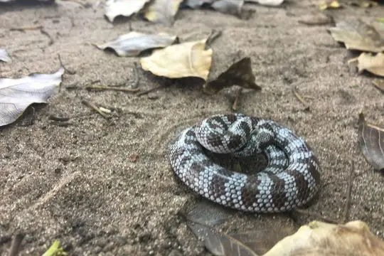
Cape Wolf Snake (multimaculatum)Lycophidion multimaculatum- No photo yetChad Wolf SnakeLycophidion tchadensis
- No photo yetChirio’s Wolf SnakeLycophidion chirioi
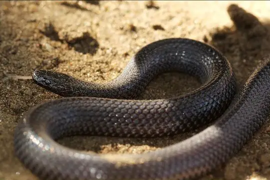
Dwarf Wolf SnakeLycophidion nanum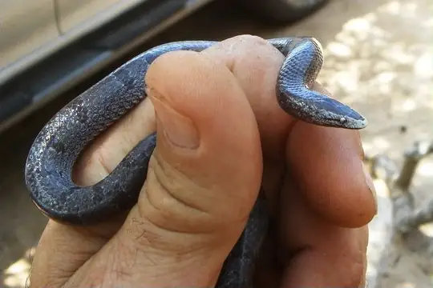
Eastern Wolf SnakeLycophidion semiannule Flat Wolf SnakeLycophidion laterale
Flat Wolf SnakeLycophidion laterale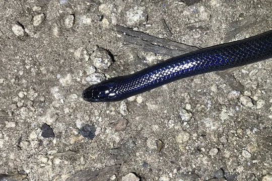
Flat-snouted Wolf SnakeLycophidion depressirostre- No photo yetHellmich's Wolf SnakeLycophidion hellmichi
- No photo yetMozambique Wolf SnakeLycophidion acutirostre
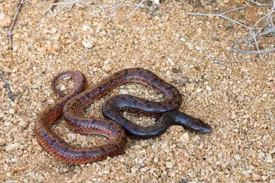
Namibian Wolf SnakeLycophidion namibianum Ornate Wolf SnakeLycophidion ornatum
Ornate Wolf SnakeLycophidion ornatum Pale Wolf SnakeLycophidion irroratum
Pale Wolf SnakeLycophidion irroratum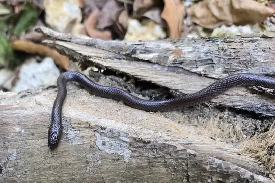
Pemba Wolf SnakeLycophidion pembanum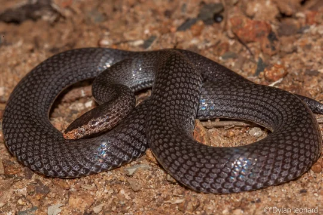
Pygmy Wolf SnakeLycophidion pygmaeum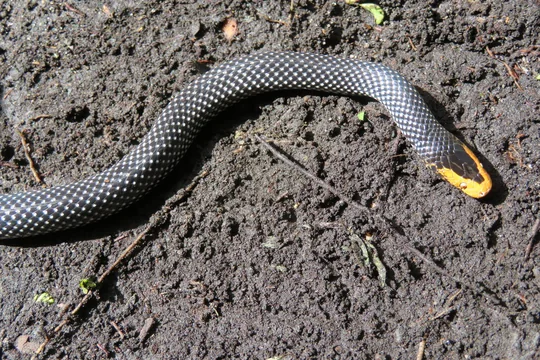
Red-snouted Wolf SnakeLycophidion uzungwense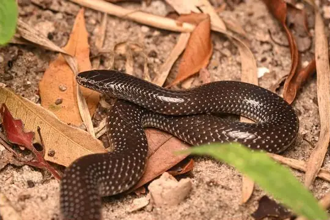
Speckled Wolf SnakeLycophidion meleagre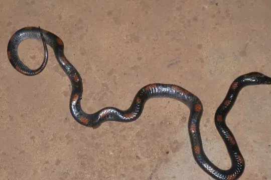
Spotted Wolf SnakeLycophidion albomaculatum Taylor's Wolf SnakeLycophidion taylori
Taylor's Wolf SnakeLycophidion taylori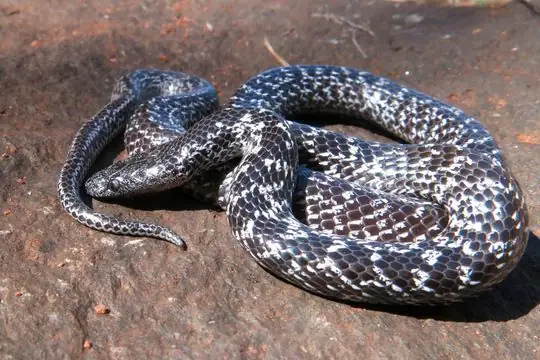
Variegated Wolf SnakeLycophidion variegatum Western Jackson’s Wolf SnakeLycophidion jacksoni
Western Jackson’s Wolf SnakeLycophidion jacksoni Lycophidion semicinctum
Lycophidion semicinctum
No snakes in Lycophidion match.
About the genus Lycophidion
- Distribution: living species recorded in 42 countries, on one continent: Africa.
- Family: Lamprophiidae.
- Countries and territories: Angola, Benin, Botswana, Burkina Faso, Burundi, Cameroon, Central African Republic, Chad, Democratic Republic of the Congo, Egypt, Equatorial Guinea, Eritrea, Eswatini, Ethiopia, Gabon, Gambia, Ghana, Guinea, Guinea-Bissau, Ivory Coast, Kenya, Lesotho, Liberia, Malawi, Mali, Mozambique, Namibia, Niger, Nigeria, Republic of the Congo, Rwanda, Senegal, Sierra Leone, Somalia, South Africa, South Sudan, Sudan, Tanzania, Togo, Uganda and 2 more.
Compare its species
Its living species side by side. Lengths come only from SnakeList’s reviewed, sourced accounts; the others are left blank rather than guessed.
| Species | Venom | Recorded in | Adult length (reviewed accounts) |
|---|---|---|---|
| Blotched Wolf Snake Lycophidion nigromaculatum | Non-venomous | 6 countries (Africa) | No reviewed account yet |
| Cape Wolf Snake (capense) Lycophidion capense | Non-venomous | 23 countries (Africa) | No reviewed account yet |
| Cape Wolf Snake (multimaculatum) Lycophidion multimaculatum | Non-venomous | 9 countries (Africa) | No reviewed account yet |
| Chad Wolf Snake Lycophidion tchadensis | Non-venomous | 1 country (Africa) | No reviewed account yet |
| Chirio’s Wolf Snake Lycophidion chirioi | Non-venomous | 1 country (Africa) | No reviewed account yet |
| Dwarf Wolf Snake Lycophidion nanum | Non-venomous | 2 countries (Africa) | No reviewed account yet |
| Eastern Wolf Snake Lycophidion semiannule | Non-venomous | 1 country (Africa) | No reviewed account yet |
| Flat Wolf Snake Lycophidion laterale | Non-venomous | 17 countries (Africa) | No reviewed account yet |
| Flat-snouted Wolf Snake Lycophidion depressirostre | Non-venomous | 8 countries (Africa) | No reviewed account yet |
| Hellmich's Wolf Snake Lycophidion hellmichi | Non-venomous | 3 countries (Africa) | No reviewed account yet |
| Mozambique Wolf Snake Lycophidion acutirostre | Non-venomous | 3 countries (Africa) | No reviewed account yet |
| Namibian Wolf Snake Lycophidion namibianum | Non-venomous | 2 countries (Africa) | No reviewed account yet |
| Ornate Wolf Snake Lycophidion ornatum | Non-venomous | 10 countries (Africa) | No reviewed account yet |
| Pale Wolf Snake Lycophidion irroratum | Non-venomous | 17 countries (Africa) | No reviewed account yet |
| Pemba Wolf Snake Lycophidion pembanum | Non-venomous | 1 country (Africa) | No reviewed account yet |
| Pygmy Wolf Snake Lycophidion pygmaeum | Non-venomous | 1 country (Africa) | No reviewed account yet |
| Red-snouted Wolf Snake Lycophidion uzungwense | Non-venomous | 1 country (Africa) | No reviewed account yet |
| Speckled Wolf Snake Lycophidion meleagre | Non-venomous | 5 countries (Africa) | No reviewed account yet |
| Spotted Wolf Snake Lycophidion albomaculatum | Non-venomous | 6 countries (Africa) | No reviewed account yet |
| Taylor's Wolf Snake Lycophidion taylori | Non-venomous | 7 countries (Africa) | No reviewed account yet |
| Variegated Wolf Snake Lycophidion variegatum | Non-venomous | 6 countries (Africa) | No reviewed account yet |
| Western Jackson’s Wolf Snake Lycophidion jacksoni | Non-venomous | 9 countries (Africa) | No reviewed account yet |
| Lycophidion semicinctum | Non-venomous | 16 countries (Africa) | No reviewed account yet |